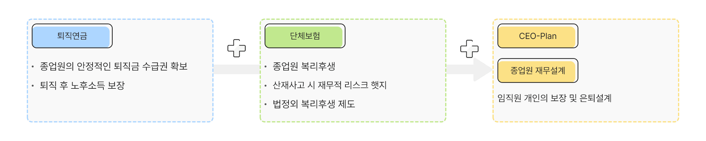
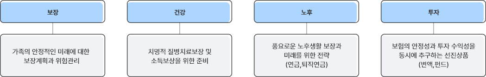

GFP(Group Financial Planner)
기업 성장과 임직원 생애설계를 돕는 든든한 보험 전문가
GFP(Group Financial Planner)는 단체보험/퇴직연금 컨설팅으로 기업복지를 증진시키고, CEO와 임직원의 보장/은퇴설계를 제안하는 기업보험 컨설팅 전문가입니다.
기업재무설계 전문가

- 퇴직연금
- 직원의 안정적인 퇴직금 수급권 확보, 퇴직 후 노후소득 보장
- 단체보험
- 종업원 복리후생, 산재사고 시 재무적 리스크 햇지
- CEO PLAN, 종업원 재무설계
- 임직원 개인의 보장 및 은퇴설계
생애설계 전문가

- 보장
- 가족의 안정적인 미래에 대한 보장계획과 위험관리
- 건강
- 치명적 질병치료보장 및 소득보상을 위한 준비
- 노후
- 풍요로운 노후생활 보장과 미래를 위한 전략(연금, 퇴직연금)
- 투자
- 보험의 안정성과 투자 수익성을 동시에 추구하는 선진상품(변액, 펀드)
- 이 광고는 GFP를 모집하기 위한 것으로 교보생명 정규직 또는 비정규직 채용과는 무관합니다. GFP는 보험업법상 ‘보험설계사’이며 독립사업자로 분류됩니다.
준법감시인확인필 3-2106-2 조직순증지원팀(2021.06.17)